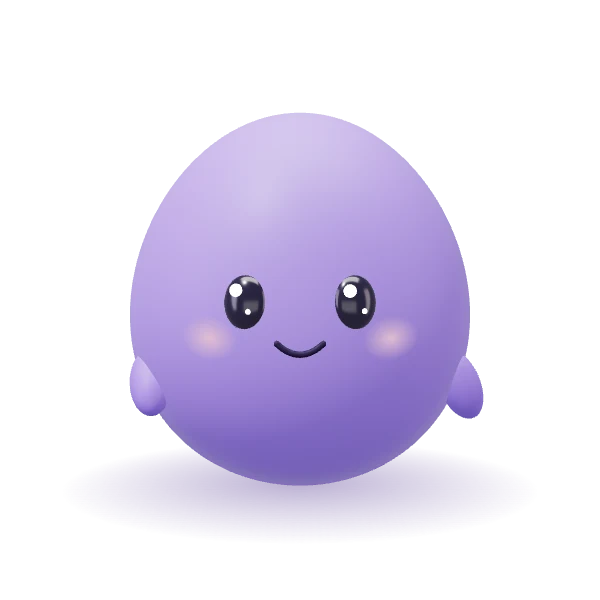
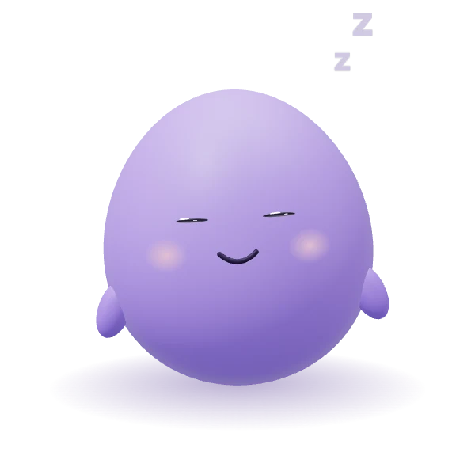
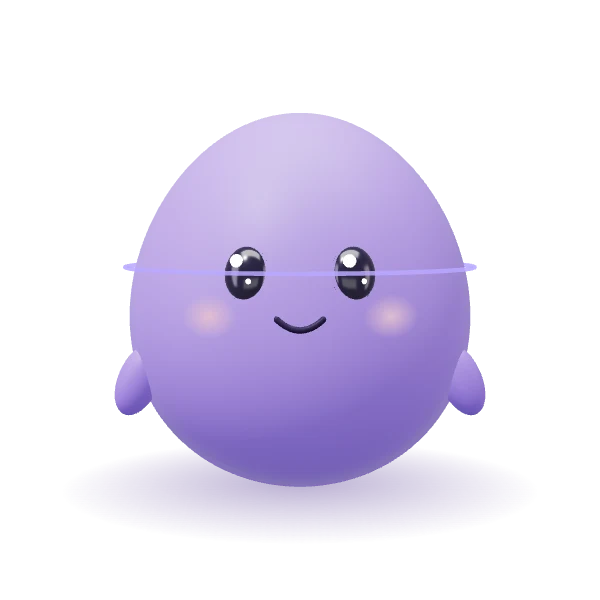

Every coding task runs the same loop. A result reaches you after Atrium's own checks and a fresh reviewer, labelled when either couldn't vouch for it.

brief
write
checks
review
you
01 · brief
Ask in a line. It starts with a brief.
Press Enter and the task starts. A quick read-only pass turns the line into a brief: the goal, what has to be true when it's done, how to check it, and what to look at first. It asks only when the line could mean two different things, and ⌘↩ lets you edit the brief before anything runs.
lumen-web · briefsmall · 200k tokens · 20 min
Goal
Add a light and dark theme toggle to the header.
Done when
The choice survives a reload, and the first paint uses it.
Check with
auto · typecheck, lint, bun test
Look at first
src/theme.ts, src/Header.tsx
Single writer · a change in one module
02 · write
One agent writes, on its own branch.
The agent works on atrium/<taskId> inside a sandbox that keeps out your keys, your .env files and Atrium's own API. Your checkout is never touched. Watch the diff grow, and steer with a note if it heads the wrong way.
After every turn that changed files, Atrium runs your typecheck, lint and tests in a checkout of their own, sandboxed, with the commands taken from the commit the task started on. A failure goes back to the agent. "Tests pass" from the agent never counts.
Atrium ran the checkson 4c1e9a2
✓tsc --noEmit3.1s
✓eslint .2.4s
✓bun test14 of 14 · 6.8s
Checks that couldn't run make the result unverified, never passed.
04 · review
A fresh reviewer reads the diff.
A clean session that knows nothing of the writer's reads only the diff and the brief, from another vendor when one is installed. It looks for unmet criteria, scope creep and missed edge cases, not style. The writer answers every finding.
Codex reviewed against the briefround 1
medium · src/theme.ts:4
A stored value other than light or dark is applied as a theme.
fixed by the writer
Only light or dark are read; anything else follows the system.
05 · you
You decide, from one queue.
The result waits in Needs you with everything on one screen: what the checks said, what the reviewer said, a short walkthrough and the diff. a approves, s sends it back with a note. A push or a pull request happens only after your yes, and Atrium does it, never the agent.
lumen-web · 3 files · 9m · ~$0.04Clean
Add a dark mode toggle
Checks passedReview approved
A theme module reads the system setting, remembers your choice and sets it before the first paint. The toggle sits in the header. theme.ts:18
Approve aSend back s
Also in the loop: it knows when to stop
budgets
Paused, with a reason
Each task has a time and token budget. The same edit three times, or no progress, pauses it with a one-line diagnosis. Give it a hint or ask it to explain the problem.
shapes
One writer, unless you click
Scouts read first when the work is broad. A split or two or three attempts run only on your click. Every task shows its tokens and an estimate.
learning
A retro from real numbers
Explain any hunk in one click. After a merge, three lines on how you directed the agents, built only from what Atrium measured. Optional, never a quiz.
Try it
The app, with sample data.
A working copy of the Mac app. Open a space, approve a result, send one back, or type a new task in the ask bar.
Click around. Nothing here is saved.

Why it's built this way
Writing the code stopped being the hard part.
44%
of agent failures in one study started with the task spec, and 24% with weak checks.every task starts from a brief, and Atrium runs your tests itself.
39–70%
lost by multi-agent setups on sequential work, where independent agents amplified errors.one writer is the default, and a split waits for your click.
86 vs 39
quiz scores for developers who asked why after generating code, against pure delegation.every result comes with a walkthrough you can read in a minute.
Point a space at a repo on your Mac or on GitHub, or make a general space for the work around the code.
Fix a bug without touching your checkout.
Describe the bug or paste the error. The agent works on its own atrium/ branch in a sandbox while you watch the diff grow. If it heads the wrong way, steer it with a note instead of starting over.
Fix the off-by-one in pagination
The upload test fails on CI, here's the log
Add rate limiting to /v1/search
What you get back
A diff on its own branch, the agent's own word on whether it's done, and a pull request one yes away.
Get a second read on a branch.
Ask for a review of a branch, or of what an agent just wrote. Another agent reads the diff against main and tells you what to fix before you merge. Work an agent writes in Atrium gets a fresh reviewer on its own, before it reaches you.
Review feature/upload-queue
What could break if I merge this?
Check this branch for missing tests
What you get back
A short list of what to fix before merging, in plain words.
Start a new project, repo and all.
Say what you're starting and Atrium sets up a code space with starter tasks. Creating the GitHub repo is an always-ask action: it waits for your yes, and no rule can approve it for you.
Start a new project called pocket-cli
Scaffold a bun CLI with tests
Add a CI workflow
What you get back
A scaffolded project on its own branch, and a card that asks before the GitHub repo is created.
Use more than one agent.
Claude runs on your Claude subscription. Add Codex or Gemini and Atrium routes code work between them, or you pick one for a task. Private spaces only ever use Claude. Every agent says how it really went: done, partial or couldn't.
Stop the dark mode flash on first load
Use Codex for this one
Bump dependencies
What you get back
Work from every agent in the same Needs you, labelled with who did it and whether it's really done.
The work around the code.
Not everything is a diff. A general space holds release notes, design docs and plans as plain files in a folder you can open in Finder. Attach a file in the ask bar and the agent works from it.
Draft the v0.9 release notes from this merge list
Summarize the auth redesign thread
Write up the config options
What you get back
A Markdown file in ~/Atrium, kept only when you approve it.

Private by design
Your code stays on your Mac.
No sign-up and no Atrium cloud. It runs on your Mac, uses your own Claude subscription, and listens only on 127.0.0.1.
Your stuff stays home.
Spaces, transcripts and files are saved on your Mac. What leaves it is what the agent CLIs send their own vendors, and pushes you said yes to.
Agents can't wander.
Every agent runs sandboxed. None can read your keys, .env files or passwords, reach Atrium's API, or drive your other apps.
Nothing counts without a yes.
Rules can approve repeated kinds of work, but never a push, a merge to main, a delete, secrets or a new repo.
Only Atrium pushes.
After your yes, Atrium itself pushes the branch or opens the pull request. Private spaces only ever use Claude.
You need a Mac with Apple silicon, bun, and the Claude Code CLI signed in to your Claude account. Get started then offers a sample: a tiny repo with one failing test, fixed on Claude's cheapest model while you watch. About a minute and around 2¢ at list prices.
zsh
$ git clone https://github.com/nakulpatel0306/atrium.git
$ cd atrium
$ bun install && bun link # puts atrium on your PATH$ atrium install # starts Atrium now and at login$ atrium open
Early, MIT licensed, and used every day by the person who builds it. macOS only. Checks are evidence, not proof: the loop docs list what they can't catch.